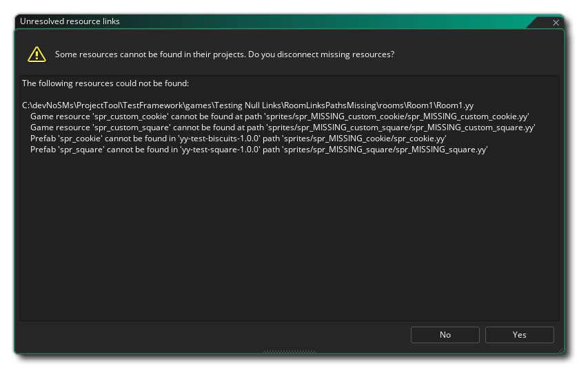
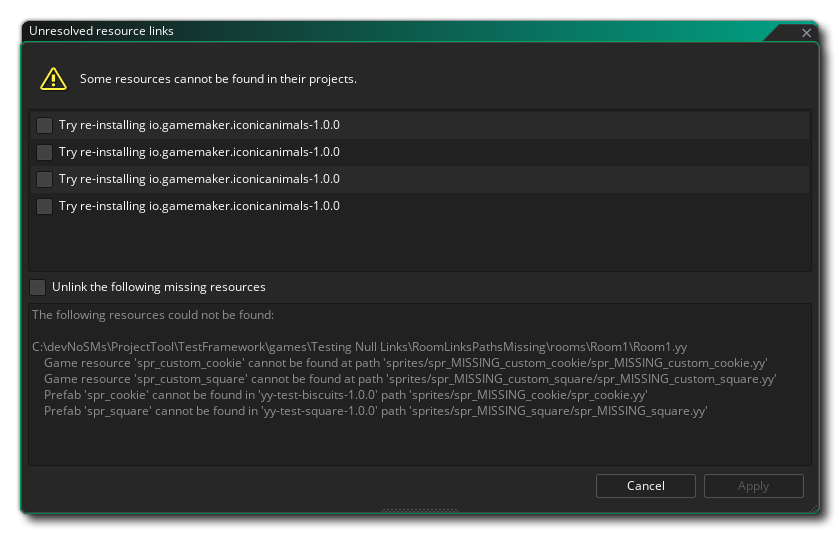

This page contains details on the project format used by GameMaker. Issues with project compatibility may be resolved with the Project Tool.
Project loading may sometimes fail if certain resources cannot be found. This may occur with regular resources (assets etc.) or with Prefabs.
For errors that don't cause the project to fail loading, see the Project Health window at the bottom of The Windows Menu.
For errors that cause the project to fail loading, GameMaker will try to salvage what it can by prompting you to unlink resources:

This is not a replacement for proper source control and only attempts to load the project in a way that doesn't make the IDE unstable, hence it is not a solution for a broken project.In case the missing resources are from a package, you will have the option to reinstall the linked packages:

At the root is the main project file, with a *.yyp extension. It describes the resources in the project and other metadata specific to it.
Next to it is another file with a *.resource_order extension. This file stores the order of groups and assets in The Asset Browser used when the filter is set to Custom Order.
GameMaker will add this file to .gitignore by default if Add skeleton .git defaults to new/imported projects is enabled under Source Control (Git) in the Plugin Preferences.
These are resource files; they store information on individual assets in a GameMaker project. They describe the data for the resource and any other files belonging to the resource (e.g. scripts, shaders, images and audio files). These data are stored in a JSON-like format.
Any YY resource files with missing associated files (e.g. a missing PNG for a sprite resource) are reported in the Project Health window when the project is opened.
These two files affect how a GameMaker project is treated by Git. They are automatically added to new and/or imported projects when Add skeleton .git defaults to new/imported projects under Source Control (Git) in the Plugin Preferences is enabled. They're also added to new projects that you create from local asset packages. Alternatively, you can disable the settings and add and modify these files yourself instead.
These files are only used with source control, which you can enable in the Game Options.
The .gitignore file is used to make Git ignore certain patterns of files. The default .gitignore file added by GameMaker ignores a few files and file extensions:
The .gitattributes file controls how Git handles certain files. The default .gitattributes file added by GameMaker introduces the following changes:
This type of file stores a compressed project export, created via the Export Project > YYZ option in The File Menu. Depending on the version of GameMaker, the compression method used may vary.
These are created and imported from (part of) a project's contents using Create Local Package and Import Local Package respectively in The Tools Menu.
The following is an overview of the file formats used by different GameMaker versions: